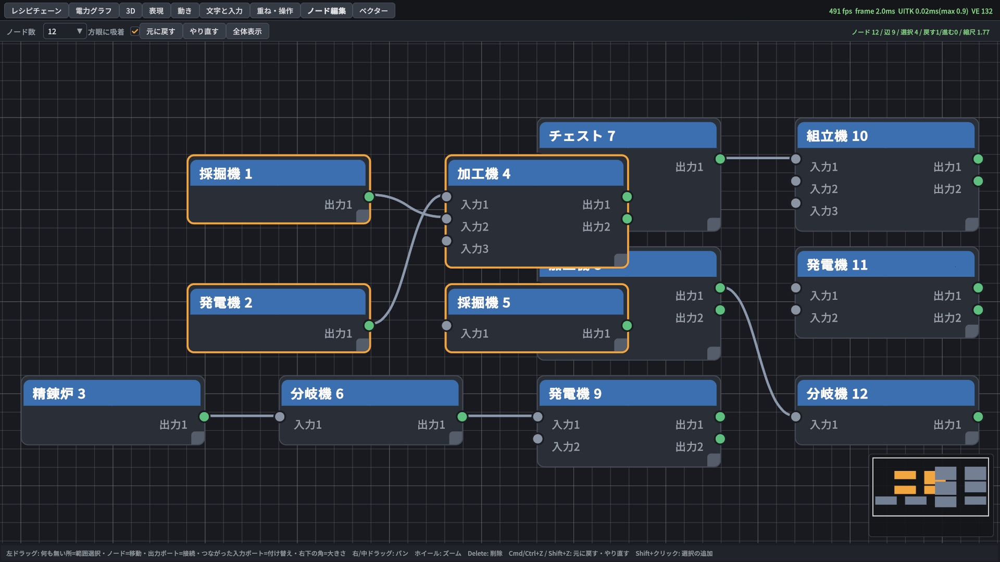
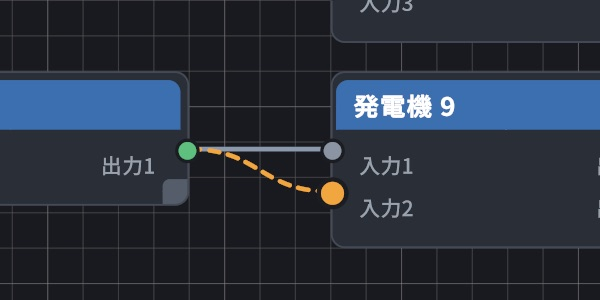
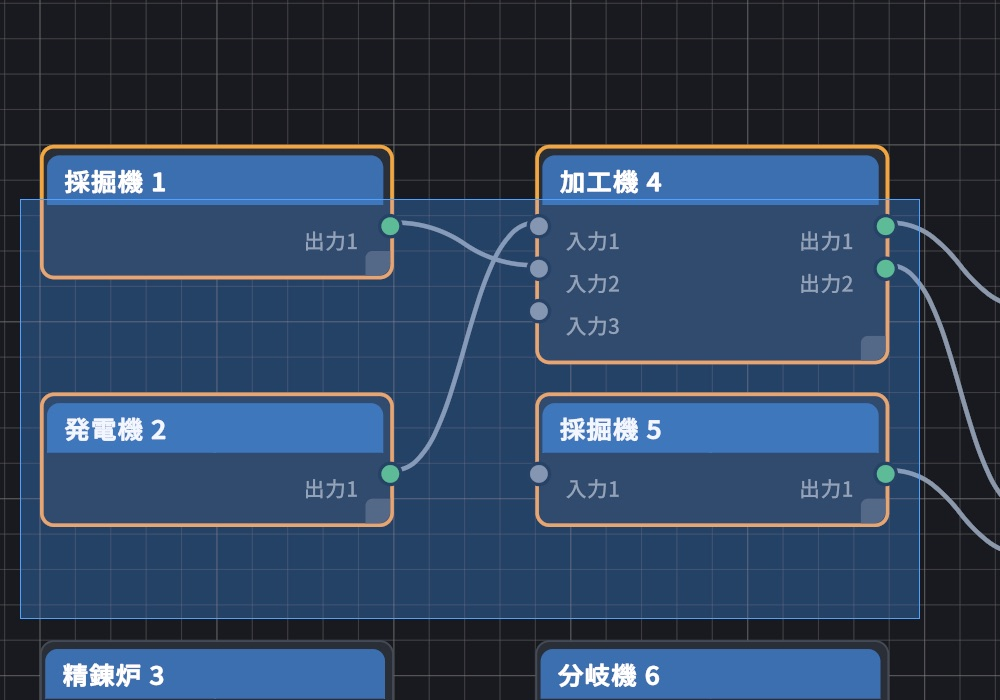
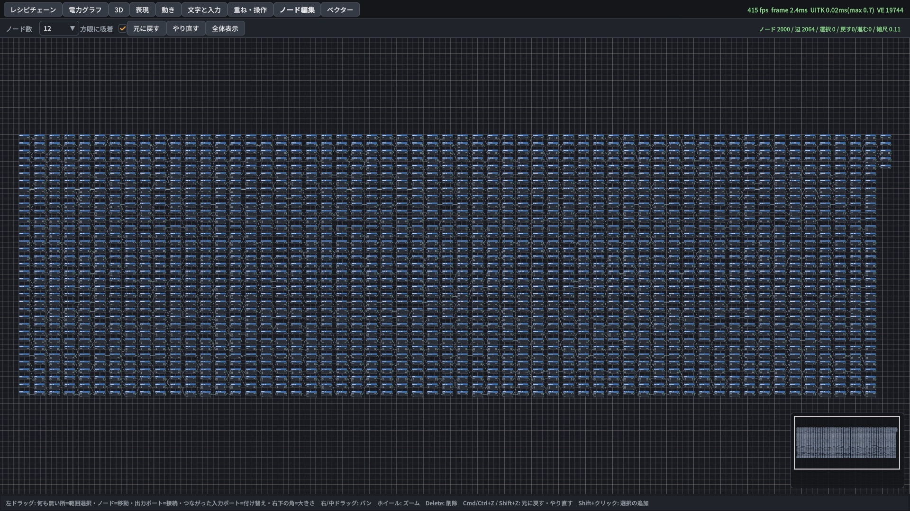
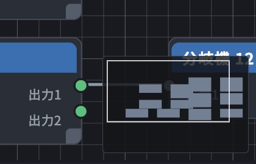
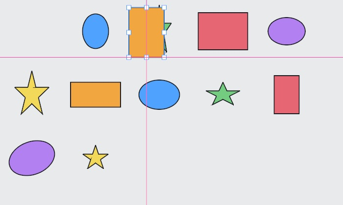
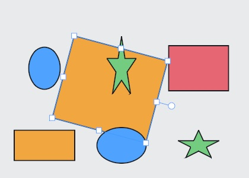
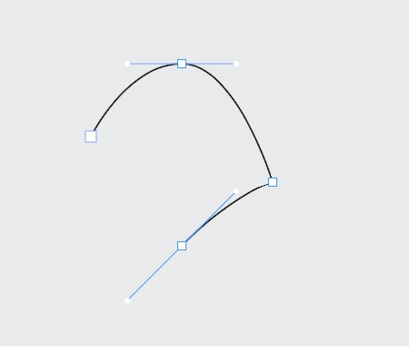
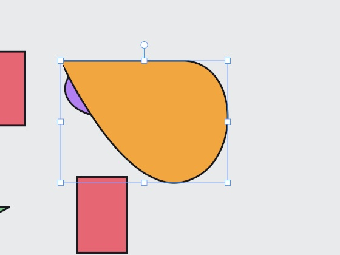
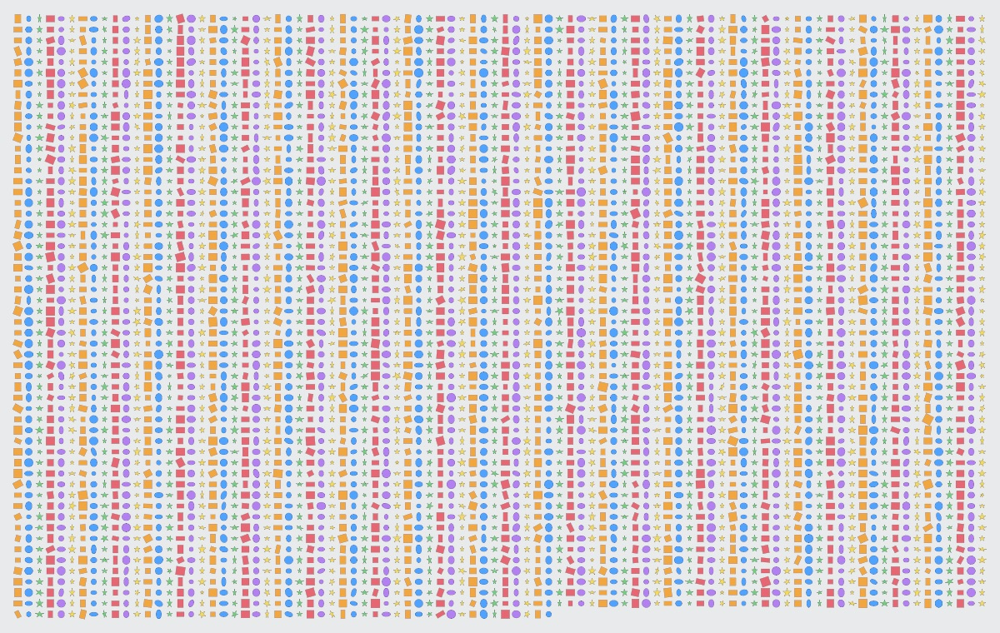

UITK PoC 第2弾 — React Flow 相当のノード編集と、Figma 風のベクター編集
2026-10-22 / ブランチ
poc/uitk-hard-cases（commit de6c68621c）/ Unity 6000.3.8f1・UI Toolkit ランタイム / Mac mini・Game ビュー 1920×1080・vSync なし / 第1弾: 難所 PoC
判定: どちらも UITK で作れた。
- ノード編集: React Flow の基本操作（ポート接続・付け替え・範囲選択・方眼吸着・大きさ変更・ミニマップ・元に戻す）が、C# 約1,200行ですべて動いた。
- ベクター編集: 矩形・楕円・ペン（ベジェ曲線）・回転込みの取っ手・スマートガイドが、約1,500行で動いた。
- Web と違って自前で持つもの:
- 線や図形の当たり判定（Painter2D に無い）
- 描き直しを小さく保つ層の分け方
- 重さの勘所（
usageHintsとtranslate）
- 数の上限の目安:
- ノードは 2,000 個（要素 約2万）でも 1 つのドラッグは 1.2ms で軽い。ただし全部を同時に動かすと 82ms。
- 図形は 5,000 個でもパン・ズームは滑らか（1.7ms）。ただし図形の層を描き直すたびに 50〜86ms かかる。全部を同時にドラッグすると約 20fps に落ちる。1,000 個なら描き直しは 11〜14ms。
- 未着手: ブール演算・テキスト編集・SVG 書き出し。
一覧
| 対象 | 動いたもの | 実装（C#行） | 負荷（UITK の更新＋描画、平均） |
|---|---|---|---|
| ノード編集 React Flow 相当 | 出力→入力のドラッグ接続（破線の予告線・落とし先の強調）、つながった入力を掴んで付け替え、占有ポートへの接続で置き換え、範囲選択・Shift 追加、複数ノードの一括移動、方眼吸着、右下の取っ手で大きさ変更、辺のクリック選択と Delete、Cmd+Z / Shift+Cmd+Z、ミニマップ（クリックで移動）、ホイールズーム・右ドラッグでパン、全体表示 | 1,208 ＋USS 158・共通の取り消し 73 | 2,000ノード・2,064辺: 待機 0.03ms / パン 6ms 1つドラッグ 1.2ms 全部ドラッグ 82ms |
| ベクター編集 Figma 風 | 矩形・楕円（Shift で正方形）、ペン（クリック=角、ドラッグ=曲線、最初の点で閉じる）、選択・範囲選択、8方向の取っ手での大きさ変更（回転中も対角を固定、Shift で縦横比）、回転（Shift で15°刻み）、スマートガイド（辺・中心への吸着と線表示）、Delete・元に戻す、拡大時の描き直し切替 | 1,488 ＋USS 55 | 5,000図形: パン・ズーム 1.7ms 1つドラッグ 開始・終了に各1回 50〜86ms 全部ドラッグ 約50ms/フレーム |
負荷は ProfilerRecorder で読んだ UIElementsUpdatePanels＋UIElementsRepaintPanels と、メインスレッドのフレーム時間。操作は PlayMode にポインタ・キーのイベントを毎フレーム注入して 2.5〜4 秒続け、その間を測った。
1. ノード編集（React Flow 相当）




負荷と、効いた2つの設定
| 操作（2,000ノード） | 最初の実装 | 改善後 | 効いたこと |
|---|---|---|---|
| パン | 83ms（usageHints なし） | 6ms | 内容を載せる親要素に UsageHints.GroupTransform。拡大・平行移動が子孫の再計算にならない。同じ時点の比較で 83ms→9ms と約9倍の差。その後の改修（ミニマップの描き直しの間引き等）を経て 6ms |
| 1つドラッグ | 13ms | 1.2ms | ノードの位置を left/top ではなく translate で持つ（レイアウトが走らない）＋ドラッグ中は動くノードに付く辺だけを別の層で描き直す |
| 全部ドラッグ | 167ms | 82ms | 同上。残りは 2,064 本の辺を毎フレーム描き直す分。実用上この操作は稀 |
| ノード数 | 待機 | パン | 1つドラッグ | 全部ドラッグ |
|---|---|---|---|---|
| 200 | 0.02ms | 1.0ms | 0.15ms | 2.1ms |
| 1,000 | 0.02ms | 3.4ms | 0.44ms | 9.5ms |
| 2,000 | 0.03ms | 6.0ms | 1.2ms | 82ms |
- 大きさ0の要素でも Painter2D の描画は出るし、子要素の当たり判定も効く。無限キャンバスの「世界」要素は大きさを持たなくてよい
- 辺の当たり判定は、ベジェ曲線を20分割した折れ線との距離で自作した（Painter2D には当たり判定が無い）
- パンの残り6msは、ミニマップと方眼を消しても約8割残る。約2万要素の位置の更新をたどる分と推測。React Flow の「表示範囲外は描かない」に当たる仕組み（範囲外ノードの非表示）は未実装

2. ベクター編集（Figma 風）





図形数と負荷
全図形を1枚の層に Painter2D で描き、ビューの拡大・平行移動は要素の変形（GPU）で当てる。ドラッグ中は、動かす図形だけを操作層へ移して毎フレーム描く。
| 場面 | 1,000図形 | 5,000図形 |
|---|---|---|
| パン・ズーム（GPU で拡大するだけ） | 0.7ms/フレーム | 1.7ms/フレーム |
| 静止層を1回描き直す（ドラッグの開始・終了、描き直し方式でズームが止まった瞬間） | 11〜14ms | 50〜86ms |
| うち描画コールバック（パスを積む時間） | 約2ms | 9〜12ms |
| 全部ドラッグ中（毎フレーム全部を描き直す） | 約12ms/フレーム | 約50ms/フレーム（約20fps） |
- 描き直しの費用は図形数にほぼ比例する（1図形あたり約11µs）。同じ内容を5フレームおきに描き直させても毎回同じだけかかった。描画コールバックでパスを積む時間は2割弱で、残りは UITK の描画更新（
UIElementsRepaintPanels）の中でかかる。内訳（塗りの三角形分割・メッシュの転送）までは切り分けていない - 1,000図形なら、ドラッグの開始・終了の引っかかりは1フレーム落ちる程度で済む。5,000図形級なら、層を空間で区切って（タイル化）一度に描き直す量を減らす設計が要る
拡大したときの画質
「GPU で拡大するだけ」（等倍で描いた形を要素の変形で拡大）と、「拡大時に描き直す」（今の倍率で描き直す）を、同じ場所で撮り比べた。
- 縁のぼけは、どちらの方式でも出なかった。10倍までは「GPU で拡大するだけ」で十分で、描き直しの負担も無い
- 64倍では描き直しが要る。描き直す範囲は表示範囲の3倍に絞り、ズームが止まって0.15秒後に描く
- 鋭い角の形が倍率で変わるので、拡大の方式を途中で切り替えると角の見た目が跳ねる
3. Web と比べて自前で持ったもの
| 機能 | Web での手段 | UITK でやったこと |
|---|---|---|
| 線・図形の当たり判定 | SVG の要素ごとのイベント、isPointInPath | 図形ごとに単位座標へ戻して内外判定。パスは折れ線にして偶奇則と線までの距離（約80行） |
| 描き直しの範囲を絞る | React Flow の仮想化、canvas の部分再描画 | 静止層と操作層、動く辺だけの層、ミニマップの間引き |
| 元に戻す・やり直す | 状態管理ライブラリ | コマンド方式の履歴（73行、両デモで共通） |
| スマートガイド | （Figma 独自） | 辺・中心の9本ずつを総当たり（約60行） |
| ブール演算（合体・切り抜き） | paper.js 等 | 未着手 |
| テキスト編集・SVG 書き出し | contenteditable / 標準 | 未検証 |
- ブール演算は画面の仕組みとは無関係な幾何計算なので、C# の多角形演算ライブラリ（Clipper2 等）を入れれば UITK 側の制約は無い
4. 移行計画への示唆
- 研究ツリー・レシピ木のようなノード図は、今回のノード編集の部分集合で足りる。数百ノードなら最適化なしでも余裕がある
- どの画面でも、拡大縮小する親要素には
UsageHints.GroupTransform、頻繁に動く要素の位置はtranslate、半透明のパネル背景は避ける。この3点は共通部品の規約に入れる - 地図や配線図のように数千の図形を描く画面を作るなら、最初から層分けとタイル化を前提にする